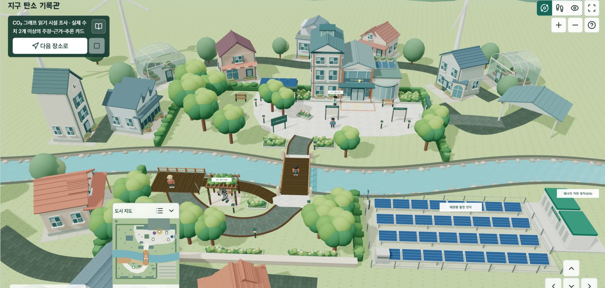
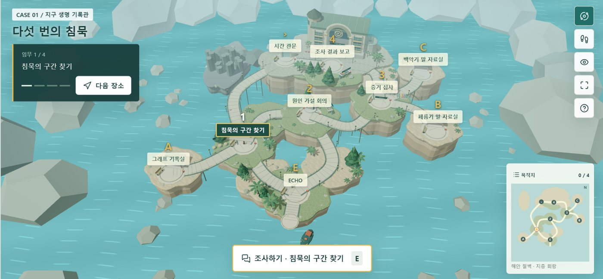

학생용
학생 책장
책장 코드를 넣으면 우리 반 책장이 열립니다. 책장 안에 학생 활동지와 출판 의뢰하기가 있습니다.
()
수업 자료 세 가지를 차례로 소개합니다. 칸을 누르면 해당 부로 이동합니다.
발표가 끝나도 이 주소로 다시 볼 수 있습니다
발표에서 쓴 화면을 그대로 옮겨 두었습니다. 주소를 저장해 두거나, QR을 옆 선생님께 보여 주세요. 링크는 모두 새 탭으로 열립니다.
AI가 답을 대신 만드는 수업이 아니라, 학생이 학습의 도착점을 먼저 설계하는 수업
중등 전환기 연구팀에서 프로토타입으로 만든, 성취기준 기반 바이브 코딩 수업
학생 모둠이 성취기준을 직접 고르고, 그 성취기준에서 "무엇을 알고 무엇을 할 수 있어야 하는가"(평가요소)를 먼저 정합니다. 그다음 그 평가요소를 익히게 해 주는 학습 앱을 AI와 함께 만듭니다. 코드는 한 줄도 쓰지 않습니다.
도착점을 먼저 정하고, 앱은 그다음에 만듭니다
1~2차시는 성취기준을 고르고 평가요소를 정하는 거꾸로 설계, 3~5차시는 AI로 실험하고 점검해 고친 뒤 실제 앱으로 올리는 단계, 6차시는 발표와 성찰입니다. 모둠은 차시마다 프로젝트 페이지를 한 장씩 채우고, 6차시에는 새로 만들지 않고 앞 장을 추려 발표합니다.
모둠이 차시마다 한 장씩 채우는 구글 슬라이드 양식입니다. 모두 12장이고, 그림을 누르면 크게 보입니다.
1 / 12
학생들이 실제로 만든 자료를 함께 봅니다
다른 창에서 보여 드립니다
학생 자료는 연수 현장에서만 보여 드렸습니다.
1부의 수업은 프로토타입이었습니다. 이 수업을 바탕으로 2026 과학탐구 선도학교 발전협의체에서 책과 사이트를 갖춘 수업 자료를 만들었습니다. 2부에서 소개합니다.
학생 모둠이 과학 원리를 담은 시뮬레이션을 AI와 함께 만들어 학교 책장에 "출간"하는 5차시 프로젝트
2026 과학탐구 선도학교 발전협의체에서 만들었습니다. 개포중학교 김희진, 거원중학교 조승호, 송례중학교 이정연
학생은 과학책의 독자에서 저자가 됩니다. 목표는 "멋진 앱"이 아니라 과학 개념을 정확히 설명하는 책입니다. 다섯 차시 내내 무엇을 바꾸면(조작) 무엇이 달라지고(결과) 무엇을 같게 하는가(통제)라는 같은 틀로 읽고, 설계하고, 고칩니다.
학생용
책장 코드를 넣으면 우리 반 책장이 열립니다. 책장 안에 학생 활동지와 출판 의뢰하기가 있습니다.
선생님용
책장을 만들고, 출판 의뢰를 승인하고, 학생 활동지 명단을 봅니다. 구글 계정으로 로그인합니다.
학생 이름은 어디에도 받지 않고 학번만 씁니다. 선생님용 사이트는 사용 신청을 하고 승인을 받은 구글 계정으로 로그인합니다.
같은 협의체 송례중학교의 공개 수업
이 영상은 연수 현장에서 상영했습니다
스페이스바로 재생하고 멈춥니다
실습
연수에서는 선생님들이 학생이 되어 활동지에 들어와, 같은 모둠 번호를 고른 사람끼리 한 칸을 함께 써 보았습니다. 한 명이 쓰면 모둠 모두의 화면에 바로 보입니다.
QR로 활동지에 들어옵니다
학번 5자리와 비밀번호 4자리를 넣고,
안내받은 모둠 번호를 고릅니다
모둠 칸에 한 줄을 쓰고,
옆 사람 화면에 바로 보이는지 확인합니다
사이트 없이 책만으로도 생각을 정리하고 기록할 수 있습니다
다만 1·5차시의 책 조작, 2·3차시의 AI 작업, 4차시의 출판 의뢰는 기기와 사이트가 필요합니다. 책자는 표지만 실었습니다. 표지를 누르면 크게 보입니다.
결과물만이 아니라 과정을 봅니다
항목마다 잘함, 보통, 노력이 필요함의 세 단계로 봅니다. 자세한 내용은 교사용 책자 26쪽에 있습니다.
평가의 근거는 학생 책, 활동지와 모둠 대화, 출판된 책입니다. 선생님 화면에서 출판된 책 목록을 엑셀 파일(CSV)로 받을 수 있고, 활동지 명단에서 모둠별 대화와 Talk Log를 볼 수 있습니다.
로그인 없이 눌러 볼 수 있는 연습용 화면이 두 가지 있습니다. 여기서 한 일은 학생에게 보이지 않습니다.
신청은 수업 1~2주 전에 해 두면 안심입니다. 자세한 순서는 교사용 수업 가이드 5~8쪽에 있습니다.
3D 지도에서 하는 고1 과학 탐구 수업
학생은지도를 걸어 자료를 찾아 읽고 답을 씁니다
선생님은한 화면에서 반 전체의 진행과 답을 봅니다
에서 만들었습니다. 노동규, 조승호, 한빛모은, 조승재

NET ZERO ECO-CITY4차시
에너지는 보존되는데 왜 절약하고 탄소배출을 줄여야 할까?
실제 배출량·에너지 자료를 읽고 우리 도시를 설계합니다.

화석 수사대사건 4개
생물의 기록이 급격히 줄어든 이유는 무엇일까?
화석과 지층 자료를 증거로 지구의 과거를 추리합니다.
선생님 활용 안내 영상, 수업 열기
이 영상은 연수 현장에서 상영했습니다
스페이스바로 재생하고 멈춥니다
수업 이름과 비밀번호를 적으면 입장 코드가 나옵니다.
학생은 학번과 이름만 적고 들어옵니다.
누가 어디에서 몇 단계를 하고 있는지 한 화면에 보입니다.
학생 화면을 한 번에 멈추고 한곳으로 부릅니다.
슬라이드를 모든 학생 화면에 띄웁니다.
한 질문의 답을 반 전체 보기 모드로 볼 수 있습니다.
루브릭에 따라 단계별로 점수를 줍니다.
학생 쪽에는 자료실과 갤러리가 있습니다. 지도 위 자료실에서 탐구 자료의 원본 출처를 확인하고, 갤러리에서 친구의 카드를 보고 질문을 남깁니다.
세 자료에 공통으로 담은 생각
이 사이트에 나온 링크를 한곳에 모았습니다. 모두 새 탭으로 열립니다.
()
방향키 ← → 로 넘깁니다. 스크롤해서 읽기